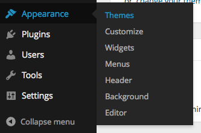
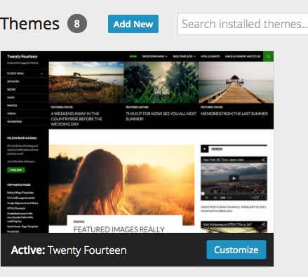
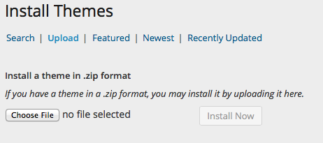

Slowave
Uploading and Installing Slowave
To install your theme in WordPress you must navigate to the menu "Appearance" on the left and then the submenu "Themes". From that page you should see your current theme "Twenty Eleven" by default OR whatever theme you currently have. Now click the "Install Themes" tab and then the text button at the top "Upload".
You then should click Choose File and find your theme files on your computer and upload them. Note: You are only uploading the folder "SlowaveWPTheme.zip" Your final step is to "Activate" your theme. If you grabbed the "Installable WordPress Theme download from ThemeForest, your file name will not match this.
Congratulations, you just installed the Slowave WordPress theme! Now let's install the required plugins.


